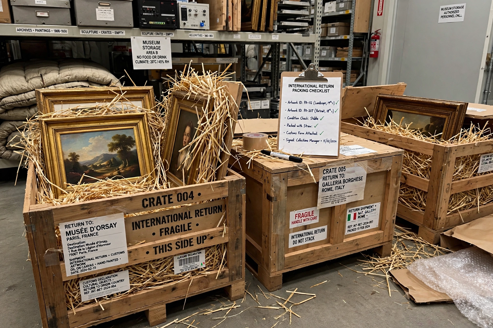

Art repatriation
Art repatriation is the return of works of art and other items of cultural property, often with historical significance or looted during imperialism, war or in colonial contexts, to their original owners or locations of origin. It is a growing area of dispute between museums, national governments, and source communities, and it intersects with international law, ethics, and the history of collecting.

Artworks prepared for return to their country of origin.
History
Claims for the return of cultural property are not new: after the Napoleonic Wars, artworks looted by French armies were partially returned following the Congress of Vienna in 1815. In the twentieth century, the systematic looting of art by Nazi Germany during the Second World War generated a large body of restitution claims by Jewish families and institutions, many of which remain unresolved. The 1970 UNESCO Convention on the Means of Prohibiting and Preventing the Illicit Import, Export and Transfer of Ownership of Cultural Property established a framework for the return of illegally exported cultural objects, and the 1995 UNIDROIT Convention supplemented it with private-law rules.
Notable cases
Among the most famous disputes are the Parthenon Marbles (often called the Elgin Marbles), held by the British Museum and claimed by Greece; the Benin Bronzes, thousands of plaques and sculptures looted from the Kingdom of Benin in 1897 and dispersed among Western museums, many of which have been returned to Nigeria since the 2020s; and the bust of Nefertiti in Berlin, claimed by Egypt. Other prominent returns include Machu Picchu artefacts returned by Yale University to Peru, and numerous restitutions of Nazi-looted paintings to the heirs of their pre-war owners.
Arguments
Supporters of repatriation argue that objects were acquired through coercion, colonial violence, or illicit excavation, and that source communities have a moral and legal right to their cultural heritage. Opponents, including directors of major "encyclopedic" museums, argue that great museums provide universal access, scholarship, and preservation, and that wholesale returns would empty collections. The 2002 Declaration on the Importance and Value of Universal Museums, signed by 18 major institutions, marked a high point of the retentionist position, though many signatories have since softened their stance.
Legal framework
Repatriation claims proceed under a patchwork of international conventions, bilateral agreements, national laws such as the United States' Native American Graves Protection and Repatriation Act (NAGPRA, 1990), and voluntary ethical codes adopted by museum associations. Because conventions generally are not retroactive, many colonial-era claims are resolved through negotiation and diplomacy rather than litigation.
See also
This article is a recreation written from memory for the muse-webcrawl project.